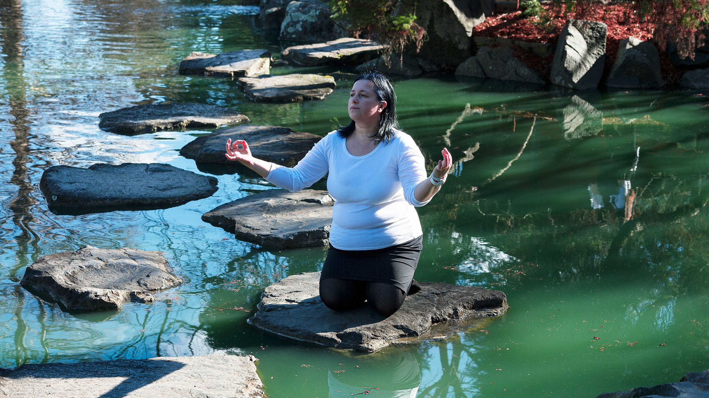

Strala Jóga
∎ Nem is gondolnánk, hogy a szervezetünk számára mennyi minden eredményezhet egyensúlytalanságot, és mit adhat nekünk a stresszoldó jóga. Egy nagyvárosi lét folyamatos zaj- fény- és levegő szennyezett környezetének hatásai, melyek érzékszerveinknek állandó impulzusokat adnak, egy túlhajszolt, rohanó élet, amit túlórák, kevés alvás, éjszakázás tarkít, melyben erőnket koffeinnel, alkohollal, dohányzással vagy drogokkal próbáljuk visszaszerezni, egyenes út a szervezetünk kimerítéhez és megbetegítéséhez.
∎ Az ászanák viszont ekkor sem teljesen passzivak, hiszen lesznek benne izmok, melyekkel aktívan kell dolgozni, míg mások passzív állapotban pihenhetnek az alátámasztásokon. Az aktív izommunka következtében a belső szervek erősödnek, így pl. nő a tüdőkapacitás, javul a vérkeringés. Anélkül hogy kimerülnénk az egész test felfrissül, energikussá, békéssé és nyugodttá válik.